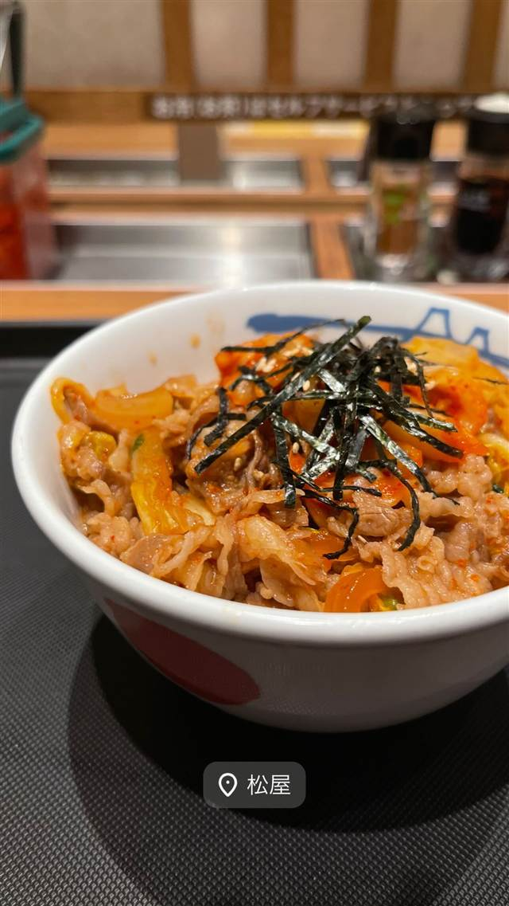

松屋 新宿3丁目店
BSE問題をきっかけに誕生し復活を遂げた豚めし
松屋
1968年に東京・江古田で牛めし専門店として創業した「松屋」の一店舗。食券制・セルフサービスで牛めしを提供する牛丼チェーンの一角で、定食メニューの豊富さでも知られる。
TRIVIA
へえ、という話
- 看板の牛めしとは別に、2004年のBSE問題を機に代替メニューとして「豚めし」が誕生。2012年に一度終売したが2022年に復活した
- 松屋の前身は創業者・瓦葺利夫が1966年に開いた中華料理店「中華飯店 松屋」だった
| 創業 | 1968年7月、東京・江古田に牛めし・焼肉定食店として開業（松屋フーズの前身） |
|---|---|
| 系譜 | 創業者・瓦葺利夫が1966年に開いた「中華飯店 松屋」（1969年閉店）を経て、1968年に牛めし専門店「松屋」を江古田に開業したのが始まり。 |
| 看板 | 牛めし |
| こだわり | 券売機による食券制とセルフサービスで、牛めしを中心に定食メニューを幅広く提供する効率化モデル。 |
| 予算 | 昼 ～¥999 夜 ～¥999 |
| 予約 | 予約不可 |
| 場所 | 新宿三丁目 東京都新宿区新宿3丁目 |
| 注意 | 食券制・セルフサービス、牛めし以外の定食メニューも豊富な全国チェーン |
食べたもの：豚丼
NEARBY
近い店・同じ系統の店
-
 ★
コーヒー 新宿三丁目
AALIYA COFFEE ROASTERS
37年続く本店譲りのフレンチトーストを並ばず味わえる
昼 ¥1,000～¥1,999 夜 ¥1,000～¥1,999
★
コーヒー 新宿三丁目
AALIYA COFFEE ROASTERS
37年続く本店譲りのフレンチトーストを並ばず味わえる
昼 ¥1,000～¥1,999 夜 ¥1,000～¥1,999
-
 つけ麺 新宿三丁目駅
つけ麺 五ノ神製作所
食べログ百名店に選ばれた海老の旨み凝縮スープのつけ麺
昼 ¥1,000～¥1,999 夜 ¥1,000～¥1,999
つけ麺 新宿三丁目駅
つけ麺 五ノ神製作所
食べログ百名店に選ばれた海老の旨み凝縮スープのつけ麺
昼 ¥1,000～¥1,999 夜 ¥1,000～¥1,999
-
 焼き鳥 新宿三丁目
新宿 今井屋本店
約100項目の認定試験に合格した職人だけが焼く比内地鶏
昼 ¥1,000～¥1,999 夜 ¥5,000～¥5,999
焼き鳥 新宿三丁目
新宿 今井屋本店
約100項目の認定試験に合格した職人だけが焼く比内地鶏
昼 ¥1,000～¥1,999 夜 ¥5,000～¥5,999
-
 ホルモン 新宿三丁目
韓国伝統料理 焼肉・生ホルモン…
ホルモン 新宿三丁目
韓国伝統料理 焼肉・生ホルモン…
-
 定食・食堂 四ツ谷駅
かつれつ 四谷たけだ
1935年築地創業「洋食たけだ」の流れを汲む、食べログ百名店の生姜焼き定食
昼 ¥1,000～¥1,999 夜 ¥1,000～¥1,999
定食・食堂 四ツ谷駅
かつれつ 四谷たけだ
1935年築地創業「洋食たけだ」の流れを汲む、食べログ百名店の生姜焼き定食
昼 ¥1,000～¥1,999 夜 ¥1,000～¥1,999
-
 定食・食堂 恵比寿
土鍋炊ごはん なかよし 本店
土鍋で炊いたごはんがおかわり自由、都内11店舗に展開する恵比寿の老舗定食店
昼 ～¥999 夜 ¥3,000～¥3,999
定食・食堂 恵比寿
土鍋炊ごはん なかよし 本店
土鍋で炊いたごはんがおかわり自由、都内11店舗に展開する恵比寿の老舗定食店
昼 ～¥999 夜 ¥3,000～¥3,999